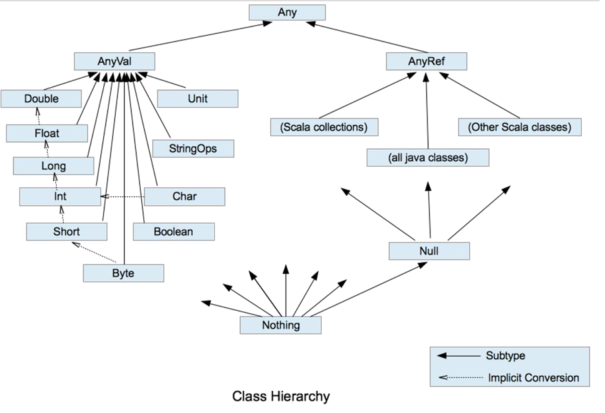

Build-in Data Types
Data type system diagram

有几个类型需要特别说明下，如下表:
| Data Type | Description |
|---|---|
| Unit | 表示无值，和Java中的void有着一样的作用。用作不返回任何结果的方法的结果类型。Unit只有一个实例值，写成() |
| Null | null 或空引用 |
| Nothing | Nothing类型在Scala的类层级的最底端；它是任何其他类型的子类型 |
| Any | Any是所有其他类的超类 |
| AnyVal | AnyRef类是Scala里所有数字类型的基类 |
| AnyRef | AnyRef类是Scala里所有引用类的基类 |
A few build-in Data Types
Scala 内置了很多基础数据类型供开发者使用，所有的这些数据类型都被封装成成熟的object，并非原始数据类型(int, float等)
如下为定义这些基础数据类型的示例:
val b: Byte = 1
val i: Int = 1
val l: Long = 1
val s: Short = 1
上述 Byte, Int, Long, Short四个数据类型均为 整数型 ，整数型默认的数据类型为 Int, 如果你想将整数型变量设置为其他整数型数据类型，你将需要使用类似如上的 显式声明数据类型，也即在变量名后边跟上 ": {数据类型}".
小数型变量默认的数据类型为 Double, 同样地如果你想将小数型变量设置为其他小数型数据类型，也需要 显式声明数据类型, 如下为内置小数型数据类型示例:
val d = 2.0 // default "Double" type
val f: Float = 3.0 // set to `Float` type
当然了 Scala 也内置了 Boolean, String, Char 三种基本数据类型, 示例如下:
val b = true // default "Boolean" type
val s = "hello" // default "String" type
val c = 'a' // default "Char" type
Tip
如下附上 Scala 官方对 9 种基本数据类型 值范围 的说明:
| Data Type | Possible Values |
|---|---|
| Boolean | true or false |
| Byte | 8-bit signed two’s complement integer (-2^7 to 2^7-1, inclusive) |
| Short | 16-bit signed two’s complement integer (-2^15 to 2^15-1, inclusive) |
| Int | 32-bit two’s complement integer (-2^31 to 2^31-1, inclusive) |
| Long | 64-bit two’s complement integer (-2^63 to 2^63-1, inclusive) |
| Float | 32-bit IEEE 754 single-precision float (1.40129846432481707e-45 to 3.40282346638528860e+38) |
| Double | 64-bit IEEE 754 double-precision float (4.94065645841246544e-324d to 1.79769313486231570e+308d) |
| Char | 16-bit unsigned Unicode character (0 to 2^16-1, inclusive) |
| String | a sequence of Char |
String Topic
Scala的字符串有很多不错的特性，接下来我们主要讨论几种常见的字符串拼接方法:
首先声明两个字符串变量
val firstName = "Shuai"
val lastName = "Li"
使用 + 操作符拼接多个字符串
val name = firstName + " " + lastName // Shuai Li
使用 s 对字符串插值处理
val name = s"$firstName $lastName" // Shuai Li
s 字符串插值也支持你将变量用 花括号 括起来
val name = s"${firstName} ${lastName}" // Shuai Li
难道 花括号 就这？不止，花括号内支持是支持表达式的
val calculation_description = s"1 + 1 = ${1 + 1}" // 1 + 1 = 2
对于一些特殊字符，使用 s 插值器时需要注意对这些字符进行 转义
println(s"The book is $$30.54") // The book is $30.54
双引号也是需要进行 转义 的，如下包含正确和错误两个示例:
println(s"The focus of this book is on \"clean code\".") // compile error
println("""The focus of this book is on "clean code".""") // The focus of this book is on "clean code".
也就是说，双引号 的转义需要通过 三重双引号 完成
使用 f 对字符串插值处理
f 字符串插值允许创建简单的格式化字符串，类似于其他语言的 printf。使用 f 插值时，所有变量引用都应该在变量尾部追加一个格式化符号（如 %d），请看如下示例:
val money = 7.856
println(f"$name%s has $money%2.2f yuan left") // Shuai Li has 7.86 yuan left
多行字符串处理
在 Scala 中我们可以使用三个双引号包裹字符串来达到创建多行字符串的目的, 示例代码如下:
val introduction =
"""My name
is Shuai Li..."""
println(introduction)
我们可以得到如下的输出结果:
My name
is Shuai Li...
但是如大家所见，这种方法有一个明显的缺陷就是: 除了第一行外的所有行都是带缩进效果的，为了解决这个问题我们可以将 | 符号加到首行外所有行的行首，并在字符串后调用 stripMargin(去除边缘空白) 方法, 代码示例如下:
val introduction =
"""My name
|is Shuai Li...""".stripMargin
println(introduction)
我们可以得到如下的输出结果:
My name
is Shuai Li...
BigInt and BigDecimal Topic
针对大数处理场景，Scala 提供了两种数据类型:
-
BigInt大整数 -
BigDecimal大十进制数(小数)
不同于其在Java中对应的类，Scala 中这两种大数数据类型支持所有你习惯使用的数字类型的操作符，一个字: 妙, 让我们看几个REPL[1]环境下的示例:
scala> val bi = BigInt(100000001)
val bi: scala.math.BigInt = 100000001
scala> bi + bi
val res2: scala.math.BigInt = 200000002
scala> bi - bi
val res3: scala.math.BigInt = 0
scala> bi * bi
val res4: scala.math.BigInt = 10000000200000001
scala> val bd = BigDecimal(10000.123)
val bd: scala.math.BigDecimal = 10000.123
scala> bd + bd
val res0: scala.math.BigDecimal = 20000.246
scala> bd * bd
val res1: scala.math.BigDecimal = 100002460.01512
Referrences
- [1] Scala REPL, https://docs.scala-lang.org/overviews/scala-book/scala-repl.html